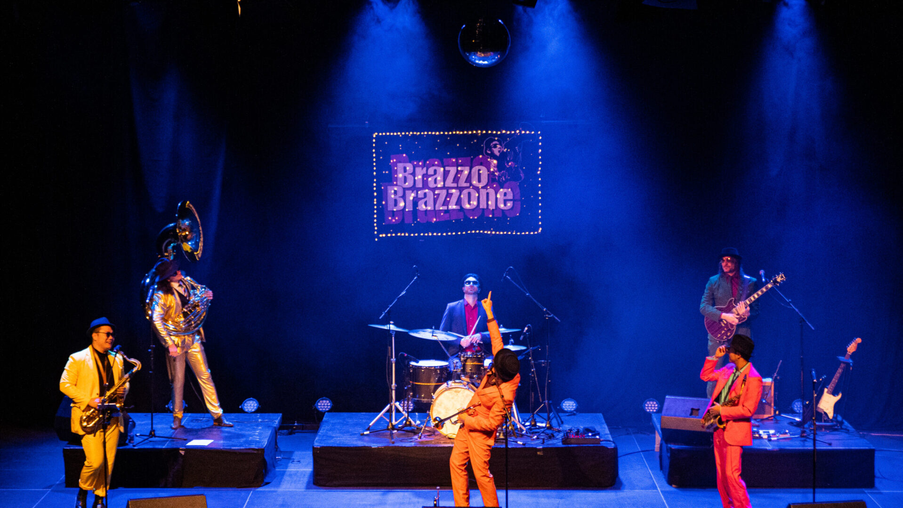
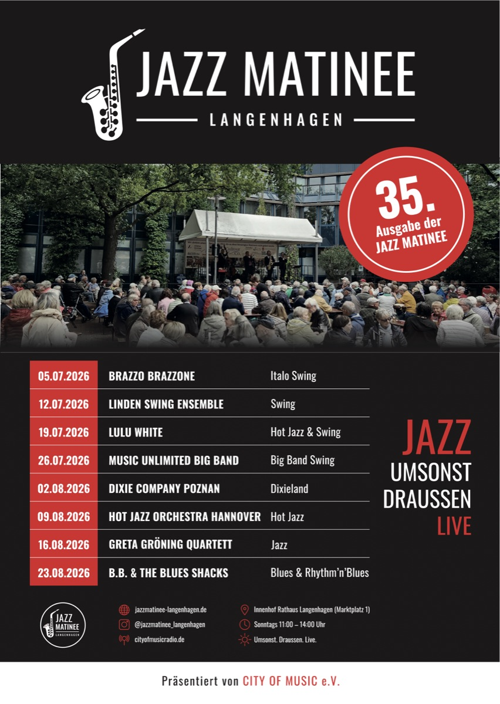
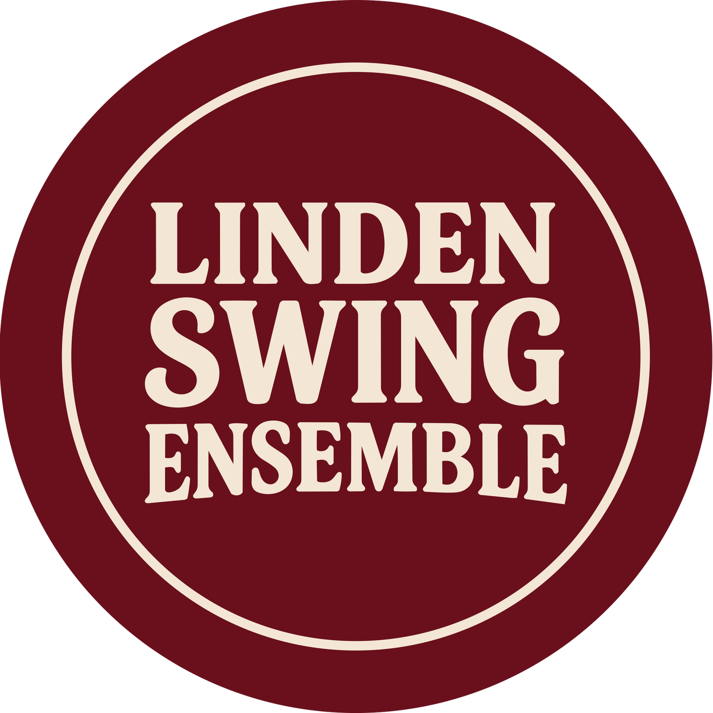
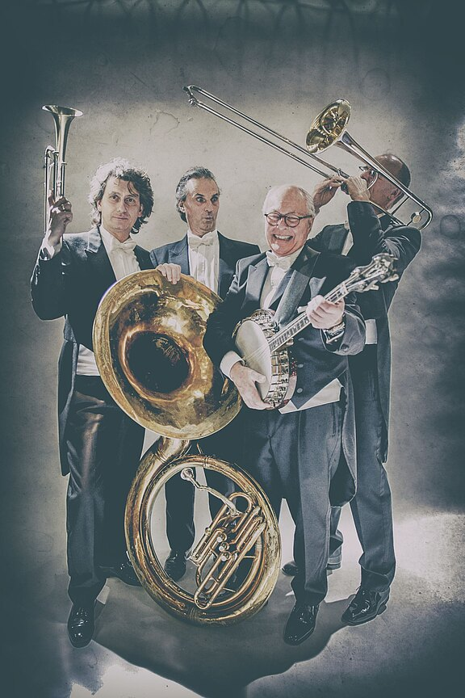
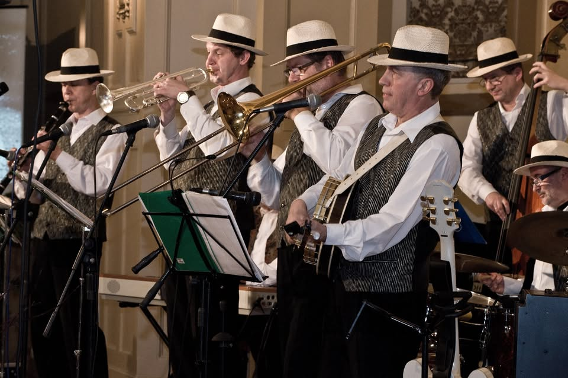
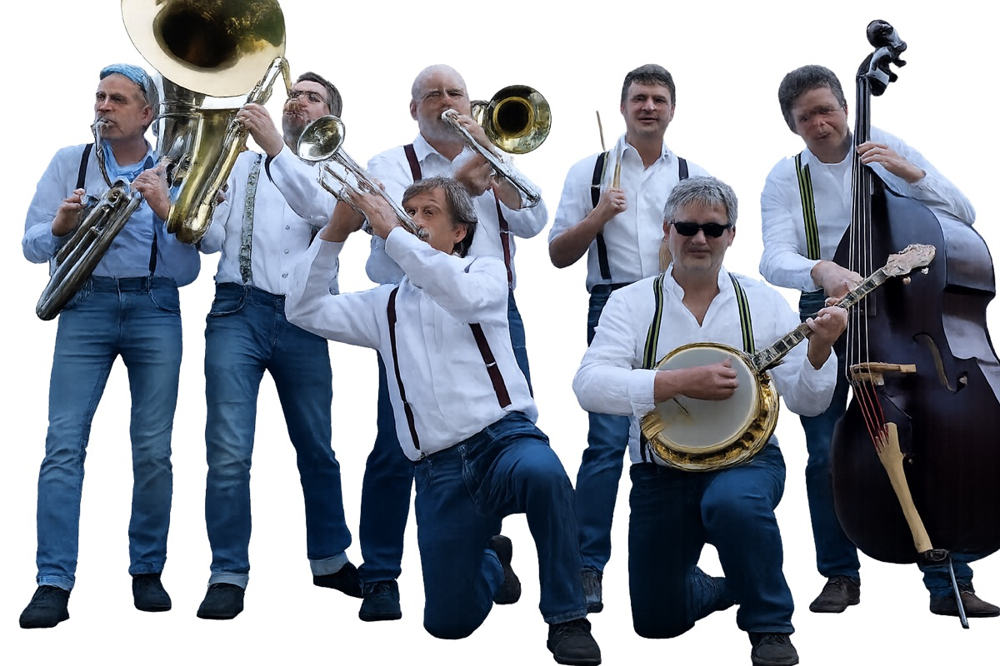
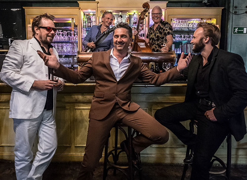

Brazzo Brazzone
Italo-World-Groove mit ordentlich Druck: Die hannoversche Brass Band verbindet Jazz, Balkan, Latin, Funk und Soul zu einer farbenfrohen musikalischen Festa.
Umsonst. Draußen. Live.
Seit 35 Jahren umsonst draußen live.
5. Juli bis 23. August 2026
Jeden Sonntag · 11–14 Uhr
Rathausinnenhof Langenhagen · Eintritt frei

Programm
Acht Sonntage, acht Konzerte, ein Ort. Die Jazzmatinee 2026 findet sonntags von 11:00 bis 14:00 Uhr im Innenhof des Rathauses Langenhagen, Marktplatz 1, statt. Umsonst. Draußen. Live.

Italo-World-Groove mit ordentlich Druck: Die hannoversche Brass Band verbindet Jazz, Balkan, Latin, Funk und Soul zu einer farbenfrohen musikalischen Festa.

Klassischer Swing aus Hannover, leichtfüßig und tanzbar gespielt. Das Ensemble bringt den Klang der großen Swing-Ära in entspannter Atmosphäre auf die Bühne.

Das Salon Orchestra feiert den Jazz der 1920er-Jahre und das Nachtleben von New Orleans. Hot Jazz, Swing und charmanter Gesang sorgen für stilvolles Flair.

Satter Big-Band-Sound trifft auf Motown, Soul, Disco, Rock und Pop. Music Unlimited präsentiert bekannte Grooves in kraftvollen Arrangements.

Seit mehr als drei Jahrzehnten steht die Formation aus Poznań für traditionellen Jazz und die Musik New Orleans’. Spielfreude und internationale Bühnenerfahrung prägen ihren Dixieland-Sound.

Traditioneller Hot Jazz aus Hannover mit lebendiger Improvisation und markantem Ensembleklang. Die Musik knüpft an die energiegeladene Jazztradition der frühen Jahrzehnte an.
Junger Vocal Jazz aus Hannover: Greta Gröning und ihr Quartett verbinden ausdrucksstarken Gesang mit dem offenen, nuancenreichen Zusammenspiel einer modernen Jazzbesetzung.

Handgemachter Blues und Rhythm ’n’ Blues mit mehr als 30 Jahren Bühnenerfahrung. Die vielfach ausgezeichnete Band verbindet tiefes Gefühl mit ansteckender Spielfreude.
Kurzvorstellung
Die Jazzmatinee Langenhagen verbindet seit Jahrzehnten hochwertige Live-Musik mit offener Stadtkultur. Sie ist Treffpunkt, Konzertreihe und Sommertradition zugleich.
Umsonst. Draußen. Live. Das bedeutet Kultur für alle in der Mitte Langenhagens, lokal verwurzelt und zugleich offen für internationale Bands und neue Publikumsgenerationen.
Geschichte
Udo Püschel rief die Jazzmatinee ins Leben und schuf damit ein Format, das Jazz, Öffentlichkeit und sommerliche Stadtkultur zusammenbrachte.
Horst-Dieter Soltau prägte die Reihe über viele Jahre und führte sie als festen Kulturtermin in Langenhagen weiter.
Seit 2026 verantwortet City of Music e.V. die Jazzmatinee. Die Umsetzung erfolgt mit Probehafen Events, finanziert durch die Stadt Langenhagen, unsere Sponsoren und private Spenden.
Presse
Presseanfragen über
Logo und Plakat stehen für Presse- und Informationszwecke bereit.
Kontakt
Für organisatorische Fragen, Presseanfragen oder Kooperationen bleibt der Kontakt klar, direkt und unkompliziert.
Jazzmatinee Langenhagen
E-Mail: info@jazzmatinee-langenhagen.de
Instagram: @jazzmatinee_langenhagen
YouTube: @JazzmatineeLangenhagen
Eine Bühne für Live-Musik, Begegnung und offene Stadtkultur.